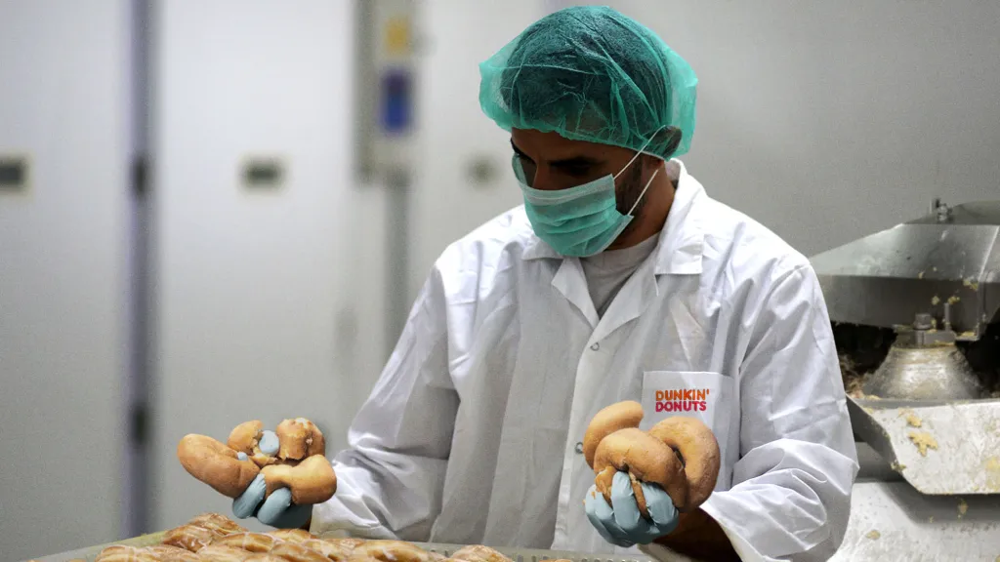
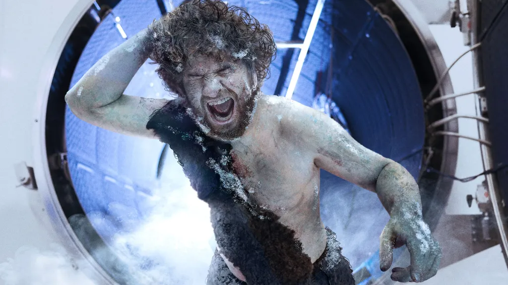

Disturbing Video Shows Dunkin' Hatchery Workers Tossing Male Donuts Into Industrial Grinder
Published: October 3, 2024
CANTON, MA—Shining a light on the unsettling realities behind the foods we eat, a disturbing video shot by undercover activists and posted on YouTube Thursday reportedly shows workers at a Dunkin' hatchery disposing of male donuts in an industrial grinder. "When a donut hatches at one of Dunkin's production facilities, a professional donut sexer quickly separates the males from the females by squeezing out the donut's filling and checking its out-turned anal vent for rudimentary male sex sprinkles," said Boston-based pastry welfare advocate Addie Tapper, explaining that because male donuts are too chewy for human consumption, they're discarded into the whirring blades of a machine that—as the activists' footage shows—instantly shreds the hatchlings into lifeless, doughy pulp. "Dunkin' claims the process is painless and humane, but this video clearly shows a cruller missing the chute and dying a slow, agonizing death on the ground. While it's heartening to watch these activists secretly transport a handful of male donuts to a baked goods sanctuary in rural Vermont, millions more are dying barbaric deaths every day, all to satisfy America's insatiable demand for pastry." The video follows a government report last month that found stress among Coolattas living in filthy, cramped conditions causes the frozen beverages to brutally slurp one another to death
Scientists Let Defrosted Neanderthal Run Around Shrieking Before Refreezing Him
Neanderthal Run Around Shrieking Scientists Refreezing Him
Published: October 4, 2024
SAN DIEGO—Appearing excited by a change of pace around the lab, researchers at the University of California, San Diego, reportedly laughed and cheered Friday as one of their perfectly preserved Neanderthal specimens regained consciousness and ran around shrieking after it was defrosted. "Releasing him from his cryochamber every so often is important to prevent loss of muscle mass, but the main reason we do it is just to watch him flail around and go absolutely nuts in a world he's unfamiliar with," said Professor Garret White, head of the cryogenics lab, who ducked as the Neanderthal flung a beaker, a liquid nitrogen tank, and an electron microscope across the room. "If we're having a rough week, we may let him out two or even three times just to see the look on his face when he wakes up in the 21st century and has this instant existential breakdown. Our anthropological data suggests he was a feared pack leader around 40,000 years ago, so it's particularly entertaining to see him get frustrated when the lab's other Neanderthals, who are still frozen, don't obey his commands to flay us alive." White added that when it was time to refreeze the angry Neanderthal, researchers simply handed him a tablet computer and let TikTok's algorithm lull him into total complacency
SAN DIEGO—Appearing excited by a change of pace around the lab, researchers at the University of California, San Diego, reportedly laughed and cheered Friday as one of their perfectly preserved Neanderthal specimens regained consciousness and ran around shrieking after it was defrosted. "Releasing him from his cryochamber every so often is important to prevent loss of muscle mass, but the main reason we do it is just to watch him flail around and go absolutely nuts in a world he's unfamiliar with," said Professor Garret White, head of the cryogenics lab, who ducked as the Neanderthal flung a beaker, a liquid nitrogen tank, and an electron microscope across the room.
Sports
Excepteur sint occaecat cupidatat non proident, sunt in culpa qui officia deserunt mollit anim id est laborum.Excepteur sint occaecat cupidatat non proident, sunt in culpa qui officia deserunt mollit anim id est laborum.
Excepteur sint occaecat cupidatat non proident, sunt in culpa qui officia deserunt mollit anim id est laborum.Excepteur sint occaecat cupidatat non proident, sunt in culpa qui
Man Thinks His Dog Is Office Mascot
Published: October 1, 2024
BURLINGTON, VT—Though the man is met with little more than polite smiles and indifferent nods as he brings his dog around from cubicle to cubicle, sources at Patterson Technologies confirmed Tuesday that employee Kyle Lutz thinks his 2-year-old terrier mix is the office's mascot. "Everyone loves it when I bring Comet into work, and in a way, I think he represents what this place is all about," said Lutz, who is apparently oblivious to the fact that three quarters of his coworkers do not know the name of his dog and many try to look busy as he walks past so they do not have to interact with the animal. "He has this go-getter spirit that perks everyone up, and his fresh attitude really reflects our office culture. I always tell HR they should have him sit in on job interviews, because if a candidate doesn't love Comet, you'll know right away they aren't a good fit for this company!" At press time, after bringing his dog into the sales team's meeting with a potential client and hollering, "This little guy right here is what it's all about!" Lutz had reportedly been fired.